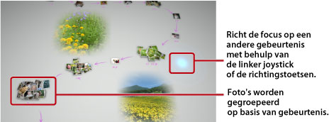

Foto's bekijken
Wanneer u Photo Gallery opstart, worden alle foto's die zijn opgeslagen in de systeemopslag van het PS3™-systeem automatisch geanalyseerd en gegroepeerd per gebeurtenis. De foto's worden gegroepeerd per gebeurtenis op basis van de datum en het tijdstip waarop ze werden gemaakt.
Gebeurtenissen selecteren
Ga van foto naar foto of van gebeurtenis naar gebeurtenis met behulp van de linker joystick of de richtingstoetsen. U kunt meerdere foto's of gebeurtenissen selecteren door bij elke selectie te drukken op de  -toets.
-toets.

De manier waarop de foto's worden weergegeven, veranderen
Om de manier waarop de foto's worden weergegeven, te veranderen, selecteert u groepen of gebeurtenissen en drukt u op de  -toets. De weergave verandert, zoals u ziet op de foto's die volgen. Om terug te keren naar de vorige weergave drukt u op de
-toets. De weergave verandert, zoals u ziet op de foto's die volgen. Om terug te keren naar de vorige weergave drukt u op de  -toets.
-toets.
Opmerking
Wanneer een foto schermvullend wordt weergegeven, kunt u het gebruikte configuratiescherm oproepen onder de  (Foto)-categorie in het XMB™-scherm door te drukken op de
(Foto)-categorie in het XMB™-scherm door te drukken op de  -toets. Vervolgens kunt u gebruik maken van de beschikbare opties van het configuratiescherm op de weergegeven foto.
-toets. Vervolgens kunt u gebruik maken van de beschikbare opties van het configuratiescherm op de weergegeven foto.
Foto's bekijken als een diashow
Om een diashow van uw foto's af te spelen, selecteert u een afspeellijst of een gebeurtenis bij [Gebied bibliotheek], drukt u op de -toets en selecteert u vervolgens  (Diashow). Op het scherm dat wordt weergegeven, stelt u de opties voor de diashow in zoals hieronder beschreven. Vervolgens selecteert u [Starten].
(Diashow). Op het scherm dat wordt weergegeven, stelt u de opties voor de diashow in zoals hieronder beschreven. Vervolgens selecteert u [Starten].
| Stijl diashow | Selecteer de manier waarop u wilt dat de foto's worden weergegeven in de diashow. |
|---|---|
| Snelheid diashow | Selecteer de snelheid van de diashow. |
| Sorteren | Selecteer de volgorde van de foto's. |
| Muziek voor diashow | Selecteer de achtergrondmuziek die moet worden gespeeld tijdens de diashow uit muziekinhoud die wordt meegeleverd met de Photo Gallery applicatie. |
 |
Selecteer de achtergrondmuziek die moet worden gespeeld tijdens de diashow uit de  (Muziek) categorie in het XMB™-scherm. (Muziek) categorie in het XMB™-scherm. |
Opmerkingen
- Tijdens een diashow kunt u het configuratiescherm voor de (Foto) categorie oproepen door te drukken op de -toets. Vervolgens kunt u gebruik maken van de beschikbare opties van het configuratiescherm op de diashow.
- Wanneer foto's worden weergegeven in [Gebied bibliotheek], kunt u [Overeenkomst] onder [Sorteren] selecteren om de foto's te ordenen op basis van overeenkomst tussen de afbeeldingen.
De achtergrondmuziek wijzigen
U kunt de muziek die op de achtergrond wordt gespeeld terwijl u foto's bekijkt, wijzigen. Druk op de PS-toets op de draadloze controller om het XMB™-scherm te openen, ga naar (Muziek) en selecteer vervolgens het muziekbestand dat u wilt afspelen.
Opmerkingen
- Om de achtergrondmuziek voor een diashow te wijzigen, selecteert u de muziek die u wilt spelen voordat u de diashow opstart.
- Als u tijdens het gebruik van Photo Gallery een muzieknummer opgeslagen op een opslagmedium selecteert als achtergrondmuziek en vervolgens een diashow start, wordt het muzieknummer mogelijk niet opnieuw afgespeeld wanneer de diashow afgelopen is.